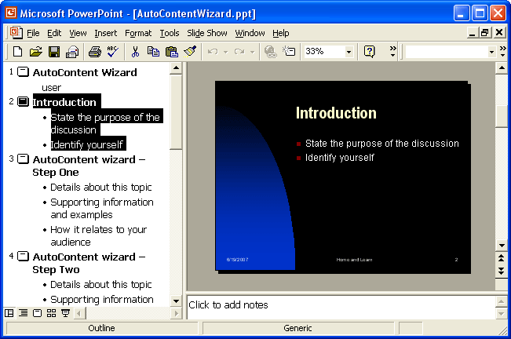
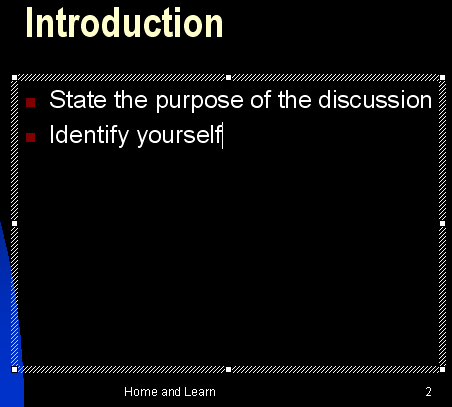
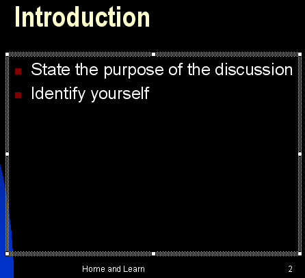
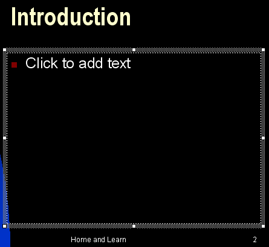
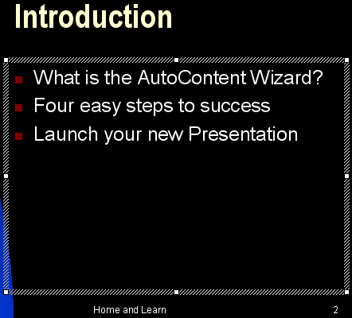
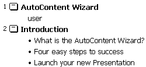
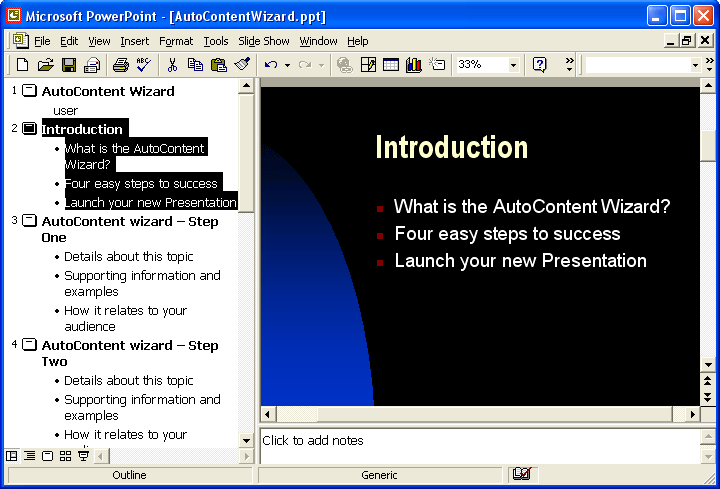

Free
powerpoint
Tutorials
|
Free
powerpoint
Tutorials
|
|
 home home |
Stay at Home and Learn | ||||
PowerPoint Bullets |
|||||
|
Part 1, 2, 3, 4, 5, 6, 7, 8, 9, 10, 11
Bullet points are probably the most widely-used formatting technique in PowerPoint presentations. They enable you to list your main points of discussion, and serve as a headline for what you are going to be talking about. The default slides in PowerPoint rely heavily on bullets. But they can be overused. First though, we'll see how to add a bulleted list to one of our slides. From the left-hand side of your presentation, in Outline View, click on slide two:  What we'll do is to delete the current bulleted list for the introduction, and add our own. Because we're going to be talking about how to use the AutoContent Wizard, we'll just have some simple headlines. We'll have these three points to discuss:
At this stage of your presentation, your just want to briefly outline what your audience can expect. (It is an introduction, after all.) So you'd start talking about the first bullet point (What is the AutoContent Wizard?), and then let people know that it's easy, and that there are only four steps to success. Finally, the audience will get to see the resulting slideshow.
Reformatting a Bulleted ListThe first thing to do is to delete the bullet points that are already there. We'll add our own text box, and put our list in that. So click anywhere inside the bulleted list, and you'll see the outline
of the current text box:  In the image above, we've clicked just to the right of the "f" of "yourself", and that's why there is a white line there - it's the cursor. To delete this bulleted list, click anywhere on the shaded line of the text box. This will select it. The text box itself should change slightly. Compare this image below, with the previous one:  In the first image, the shaded lines of the text box are diagonal. In the second image, they are round dots. Also, your cursor will disappear from the text box. When your text box looks like the second of the two images, either hit the delete key on your keyboard, or click Edit > Cut from the menu at the top of PowerPoint. You should see this:  The previous list has disappeared, and a default item has appeared in its place. (If you wanted to get rid of the text box itself, you'd hit the Delete key again.) So click where it says "Click to add text". The default text will disappear. Type a new item for the list. Type the following: What is the AutoContent Wizard? Then press the enter key on your keyboard. You'll see a new bullet appear. Type this text: Four easy steps to success Hit the enter key again, and type this for the third bullet: Launch your new Presentation When you've entered all three, your text box should look like this:  Click anywhere outside the text box and the shaded lines will disappear. But notice the Outline View on the left. It has the bulleted list we've just typed!  Here's what your full slide number two should look like:  In a later section, you'll see how to format bullets, and how to add bullet transition effects. For now, we'll move on and complete our first presentation. First, though, press F5 on your keyboard and test your work so far.
In the next part, you'll see how to add an image to a PowerPoint presentation.
|
||||